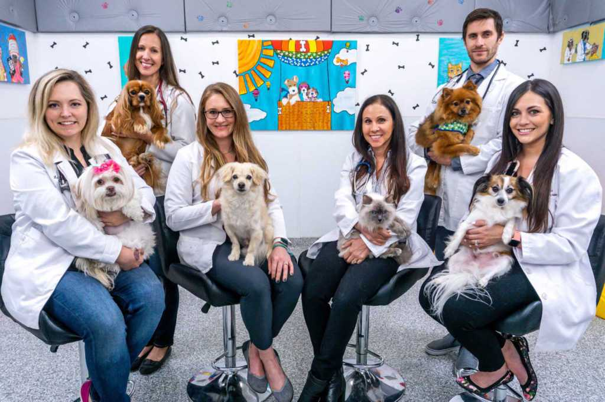

About Us
We are a veterinary clinic that has been serving the community for over 20 years. Our experienced and caring staff is dedicated to providing the best possible care for your pets.
Our clinic offers a wide range of services, including routine check-ups, vaccinations, dental care, and surgery.
Our Services
- Routine check-ups
- Vaccinations
- Dental care
- Surgery
Meet Our Team
At the veterinary clinic, there are several teams of skilled professionals who work together to provide the best possible care for pets.
The veterinary team consists of licensed veterinarians who diagnose and treat medical conditions, perform surgeries, and provide preventive care.
The veterinary technicians assist the veterinarians in various procedures and treatments, as well as provide care and comfort to the animals.
The receptionists are the first point of contact for clients, greeting them and scheduling appointments, and also help to keep the clinic running smoothly.
Additionally, the clinic may have a grooming team that provides services such as bathing, haircuts, and nail trims to help pets look and feel their best.
All of these teams work together to ensure that pets receive high-quality and compassionate care at the veterinary clinic.
Contact Us
Feel free to reach out to us with any questions or concerns you may have. You can contact us using any of the methods below:
- Phone: 555-1234
- Email: info@veterinaryclinic.com
- Address: 123 Main St, Anytown USA